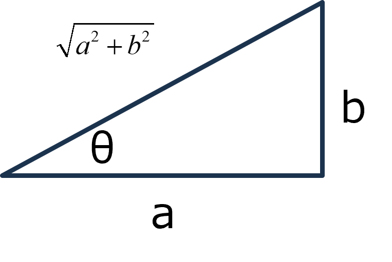

回路-07
インピーダンスの意味
インピーダンスを使うと格段に計算が楽になります．
これから説明してく，複雑な回路についても結構簡単な式になります．
そのポイントを考えていきます．
一つ注意は，これからの説明はきちんと教科書に載っているわけではなく，自分で悩みながら（AIに質問したり）して何とか納得してったものです．
ですので，間違いがあるかもしれませんので，ご注意を．
さて，インピーダンスにおけるポイントは，
\(\Large V(t) = V_0 \ e^{ j \omega t} \)
\(\Large I(t) = I_0 \ e^{ j \omega t} \)
で表すことができる，というものです．指数部に，位相情報が入っていないですが，係数のV0, I0, が複素数なら位相情報を含みます．
例えば，
\(\Large I(t) = I_0 \ e^{ j \omega t} \)
\(\Large I_0 = a + jb \)
とすると，複素平面上で，

\(\Large cos \ \theta = \frac{a}{ \sqrt{a^2 + b^2 }}, \ sin \ \theta = \frac{b}{ \sqrt{a^2 + b^2 }} \)
\(\Large I_0 = a + jb = \sqrt{a^2 + b^2 } \ (cos \ \theta + j \ sin \ \theta ) = \sqrt{a^2 + b^2 } \ e^{ j \ \theta} \)
\(\Large I(t) = I_0 \ e^{ j \omega t} = \sqrt{a^2 + b^2 } \ e^{ j \ \theta} \ e^{ j \omega t} = \sqrt{a^2 + b^2 } \ e^{ j (\omega t + \theta)}\)
となります．ここでポイントは，
振幅，振動数，位相の情報しかない
ことです．今まで示してきた，C回路，L回路（これに定数が入りますが）ではなく，もう少し複雑な回路だと，
\(\Large I(t) = I_0 \ e^{ j \omega t} + f(t) \)
という余分なものがついてしまいます．しかし，これは一般的に指数関数で減衰する項なので，スイッチオンの過渡現象では現れますが，しばらくたった定常状態（振動しているから定常状態とは言えないが）においては，この余分な項が減衰して０となってしまいます．
一般的に我々が観察しているものは，スイッチと入れてからしばらくたって安定している状態なので，このような過渡現象は必要ないのです．
ですので，インピーダンスの計算で十分であるといえます．
本当に，余分な項は減衰するの？，はきちんと確かめてはいませんが，大丈夫なようです（ChatGPT調べ），ただ，マイナスの抵抗などがあれば，どんどん大きくなっていくようです（ハウリングなどと関係しているのだろうか？）
コンデンサ
\(\Large V(t) = \frac{1}{j \omega C}\cdot I(t) \)
\(\Large I(t) = j \omega C \cdot V(t) \)
コイル
\(\Large V(t) = j \omega L \cdot I(t) \)
\(\Large I(t) = \frac{1}{ j \omega L} \ V(t) \)
これだけ覚えておけばいいことになります．
次ページは，R，C，L回路，それぞれを指数表示にして考えていきます．